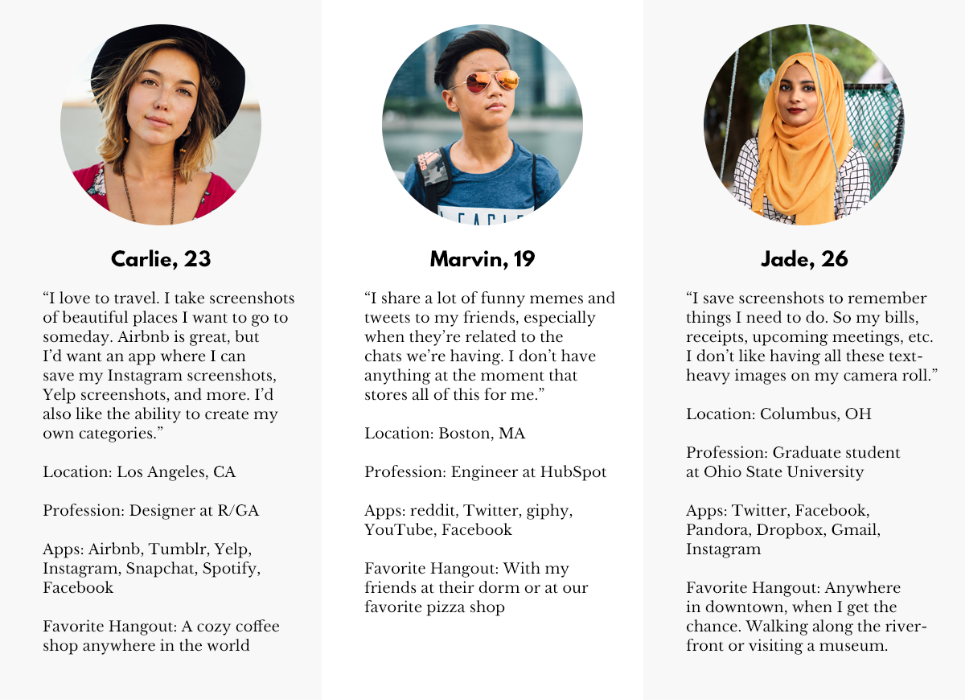

Copycat
I'm obsessed with screenshots. I take them because I like to have quick access to any important notes or any recipes when I'm shopping for ingredients at the store. The problem with screenshots is that they can be difficult to organize and they look terrible in my camera roll.
I knew that there are apps that have some OCR features, but nothing specific to screenshots. I wanted an app that leveraged machine learning to categorize screenshots and also made my screenshots look good, not disruprtive. So I decided to take it upon myself to prototype something that could do what I wanted.
Just to make sure I wouldn't be wasting my time in creating this app, I created a survey using Typeform asking people how frequently they took screenshots, what they took screenshots of as well as what they like and dislike about screenshots. I raffled off an Amazon gift card to entice more people to take the survey.
After I got the results back, I dissected them and put them on GitHub. The insights from the survey were really fascinating, and showed me that this would be a project worth doing.
Some of the most interesting tidbits of data included...
- 45% of people take screenshots multiple times per week
- 21% of people take screenshots multiple times per day
- Most people took screenshots of funny memes or images, followed by articles/e-books, receipts/bills, and food/recipes
- Texts, addresses, apps for design purposes, and more were also popular sources of screenshots
People also had a lot to say about screenshots...
-
The good
- "Easy to copy large blocks of text, particularly formatted text."
- "Easy and most authoritative (straight from the source) way to copy and share info."
- "Very quick and easy; know where the shots will be saved (photos); can access info offline; in the case of e-mail receipts/confirmations, you can see info as it was originally presented w/o formatting errors like you might get with copy and paste."
- "May get lost in photo album. Also pretty weird to see random screenshots in the sea of other photos."
- "Can't crop in real-time (like OS X drag tool). No native annotation tools. Difficult to search against (i.e. in Google Photos)."
- "A lot of the time, they look pretty sloppy (but that's more from an aesthetics perspective). Also, if you screenshot an article to send, the receiver misses out on context."
The bad
When I start a project, I also like to see what similar/competitor apps are doing, so I created a chart of direct and indirect competitors.
{kind=link}
I like to play around with other similar apps to get inspiration as well. Here's some of the thought behind that process...
Looking back at the survey data, I came up with three personas that were described.
{kind=link}
From there, I started working on wireframes based on user flows.